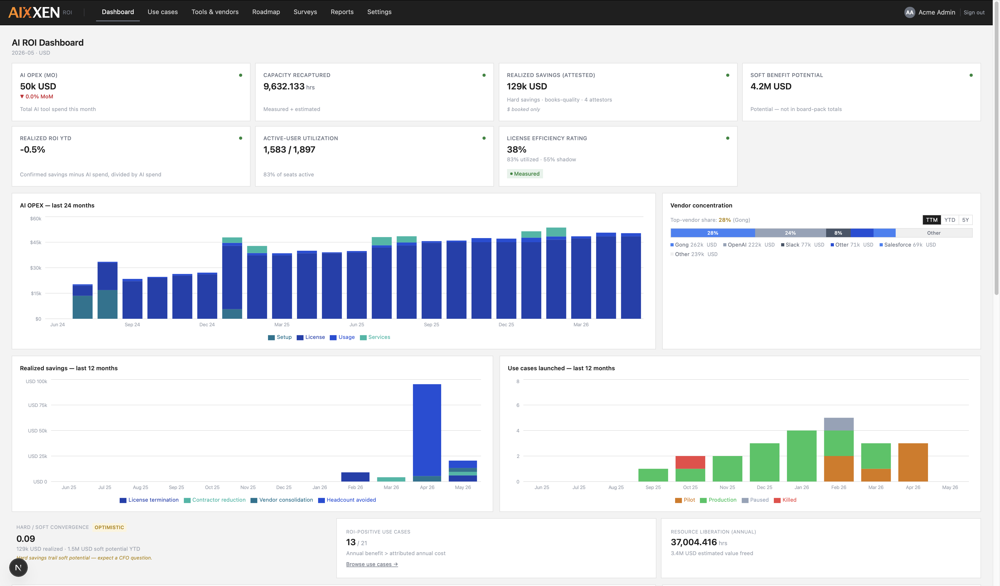
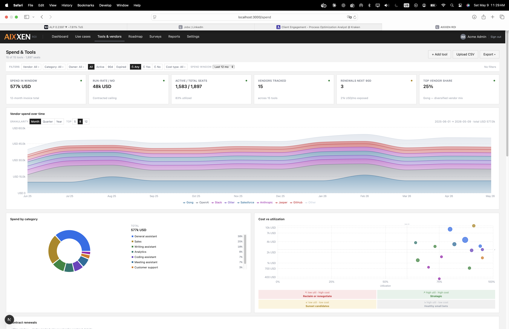
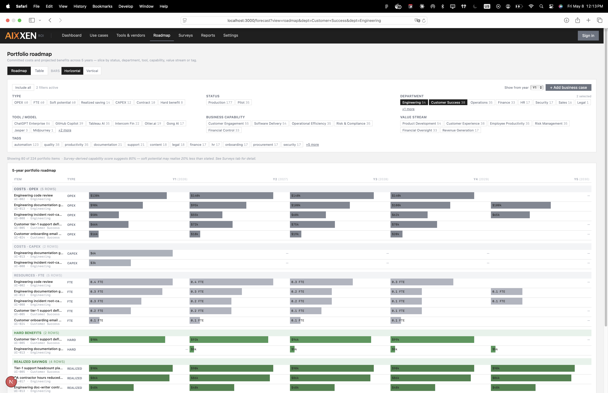
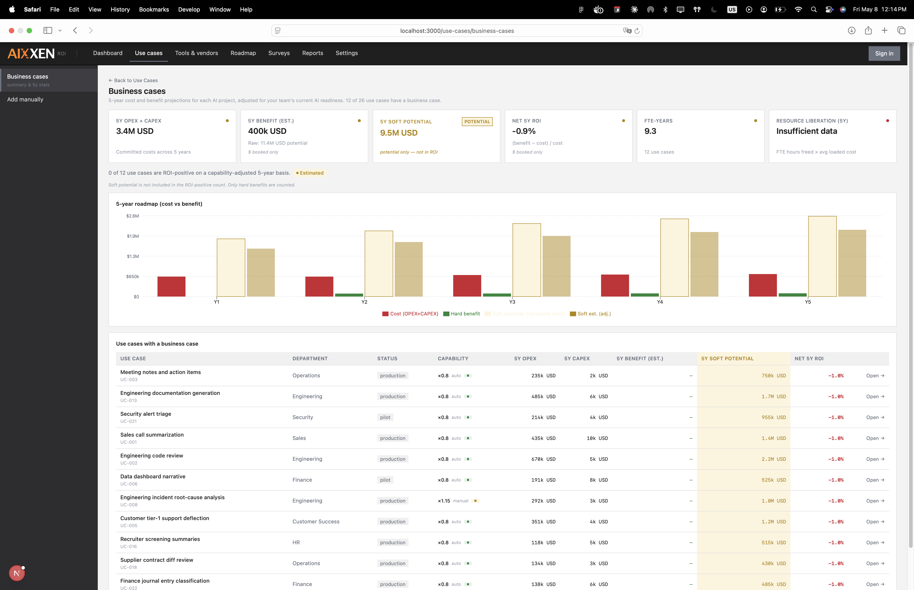
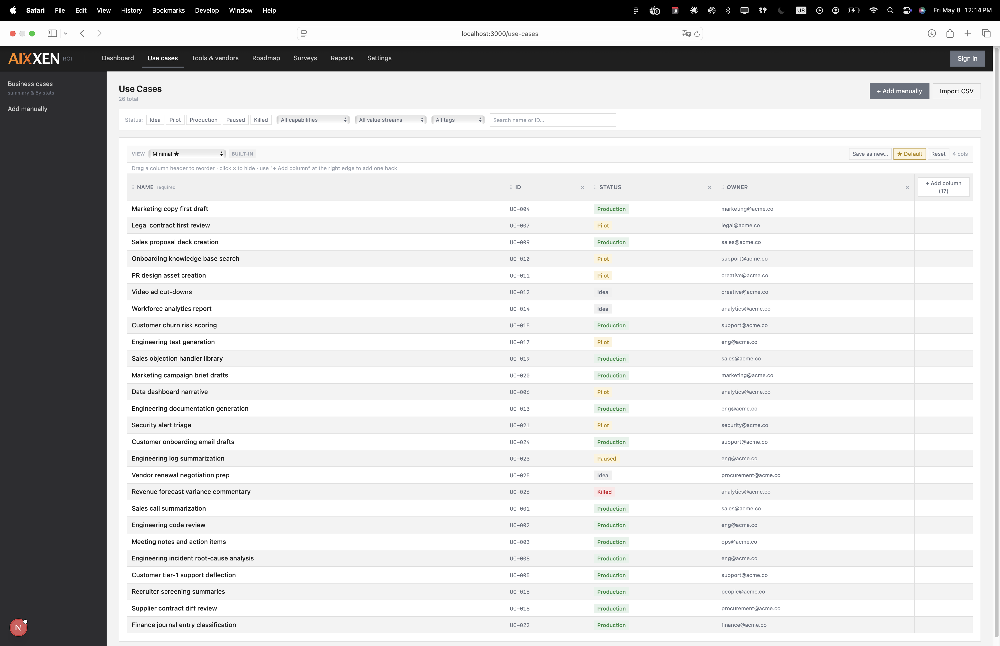
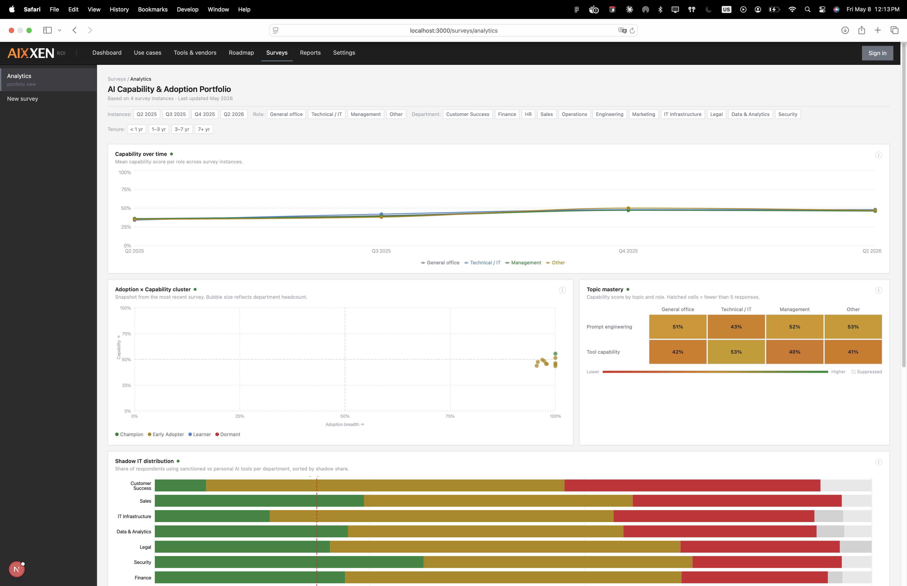
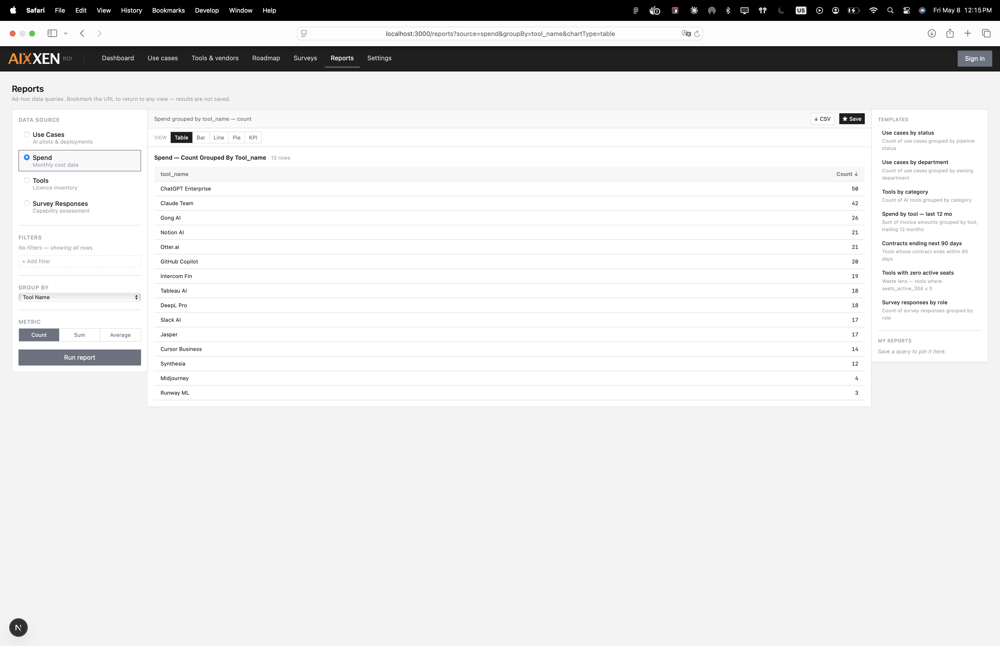

AIXXEN measures the capability gap alongside every dollar of AI spend so organizations can fix both. Vendor-neutral. No compliance overhead. Built for measuring AI benefits and optimizing for efficiency.
The vendors won the AI optimization race. OpenAI, Anthropic, Microsoft, Google ship a better, cheaper, faster model every quarter. The AI itself is no longer the bottleneck.
Your AI ROI now lives entirely on the workforce side. The same tool deployed in two organizations produces wildly different outcomes. The difference is how well your employees have been trained to use it, motivated to adopt it, and given the time to build new habits.
That makes your employees the new product. The surface area you have to develop, measure, and improve. AIXXEN puts both numbers on the same page.
If your dashboard can't answer all three on one screen, it failed. AIXXEN answers all three on a single scroll.
From every dollar paid to every AI vendor, to use-case-by-use-case business cases, to a 5-year plan-of-record roadmap.
AIXXEN is for cost controlling and portfolio intelligence. If you need any of the below, we'll point you at the vendor that does it well.
We model the gap between your AI tools and the people using them, then apply that gap as a multiplier on every soft benefit projection.
Vendor projections assume full adoption at benchmark efficiency. Your organization is not there and neither is anyone else's. Adoption gaps, skill variance, and workflow inertia all eat into the number before it reaches your P&L.
AIXXEN applies a capability factor to every soft benefit estimate. The score reduces soft projections to a realistic, traceable value. Not because the tool underperforms, but because the adoption gap is real and measurable. We show you the gap, size it in dollars, and give you a path to close it.
See how we measure your capability factorNo six-month implementation. The data is already in your spreadsheets or databases, we turn it into a surface.
Bring four data sources (tools, spend, usercount, use cases), by API, CSV or Excel.
A short anonymous survey runs across your org. Results are anonymized by design. The capability factor calibrates to your organization, not a vendor benchmark.
Vendor lifetime spend, hard vs. soft realized, 5-year roadmap, department readiness all available on screen and exportable as CSV. The screens a board pack draws on, ready when you need them.
Designed for the CFO who has to defend the AI line item, the CIO who has to land the program, and the FinOps lead who lives in the data.
You've heard "save 5 minutes per task × 200 employees" three times this year. AIXXEN forces a separation: hard savings (booked) and soft potential (capacity freed) live in different columns. Soft potential never lands in the board pack total. Plus vendor-by-vendor lifetime spend, concentration risk warnings above 40%, and renewal exposure 90 days out.
Which use cases moved from pilot to production this quarter? Which departments are leading on capability and which are stuck? Which contracts auto-renew next month? AIXXEN puts the operational view and the capability view on the same surface so the AI program decisions are informed by both spend and readiness.
Tool-by-tool utilization vs cost. Shadow AI share by department. Soft-to-hard convergence so you know if your projections are tracking, optimistic, or pessimistic. Custom reports with CSV export. URL-shareable saved views. Drag-and-drop column manager. Built for the person who lives in the data.
If you're evaluating AIXXEN against an adjacent product, this is where the differences live. No filler.
service@icelt.net · same-day response during EU and US business hours.